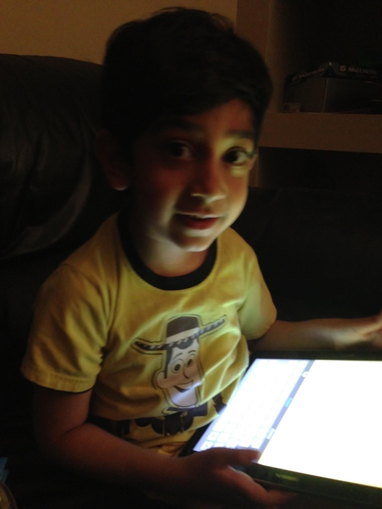
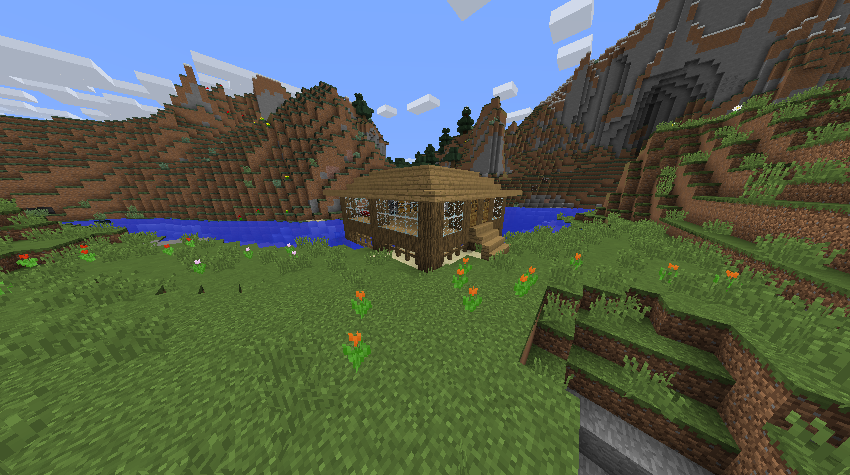
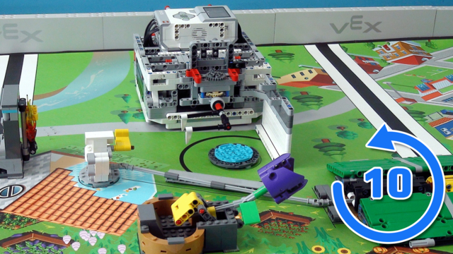
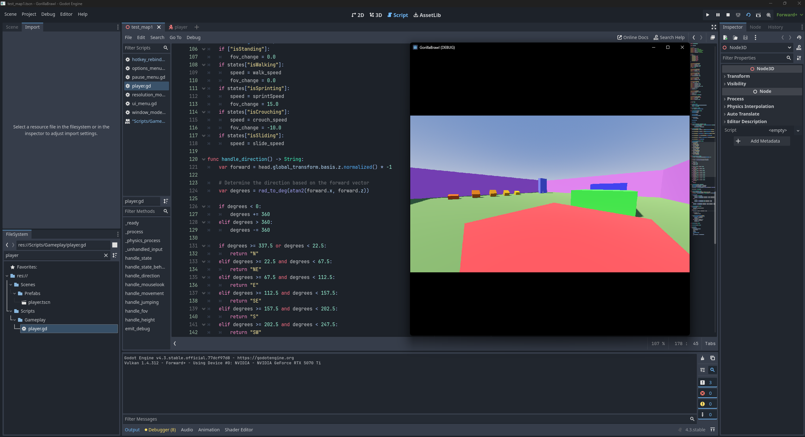

Version 1.0
When thinking about my composition so far, many elements of my life come into mind.
But the few that stand out to me all have to do with technology.
When I got my first tablet at 5, I got introduced to a world completely different from my own.
A culture, of all languages and mannerisms, fused into one online.
When I played my first video game, and felt the joy of mining blocks or shooting zombies, I got introduced to the world of the internet.

I first started playing simple games like Minecraft and Roblox, which both had the similarity of being games that focused on player autonomy over fixed storylines.
I was creatively driven to build houses, defend land, collaborate with friends, and expand my horizons.
And I would take this mindset towards other things in life.
Version 1.5
When many of my friends were into drawing, painting, and photography, I was disinterested.
While they worked for others, I was personally never into anything physical, and rather felt the digital world was what piqued my interest.
So naturally, when I heard about coding for the first time at 7, I was hooked.
It was in a classroom, and we had only learned basic ways to display the word ‘Hello’, but that was all that was needed to start the fire in me.
It seemed like the first art form that truly catered to my interests, and my years of creativity and problem solving in video games prior allowed me to assimilate easily into this field.

Version 2.0
Later on, I would venture on into the engineering aspect of the technology world, starting by leading a LEGO robotics club, and personally coding a team robot.
This was the dive into the waters that led to me taking coding very seriously in the present day, and a turning point in getting over my distaste for physical forms of media.
I now understood that these things could go hand-in-hand, which is why I finally decided to fully assemble my own working computer for personal use when I was 13, which allowed me to easily prototype games, websites, and applications that I would make, such as an arduino temperature gauge.

Version 3.0
When I think about my future, I prioritize many things, including job stability, a fluid income, and flexibility in my options.
But most of all, I don’t want to dedicate my life to something I’m not passionate about.
That simple interest that started when I was a kid defined my life path into something I care about.
I care about solving problems and expressing myself artistically in a way not many understand.
I care about making products for others to enjoy, use, and spread to others.
I care about looking back on my creations and being proud of what I’ve done.
And I care about the connections I’ve made either through school, video games, or the coding world.


These things, the people I know, the things I create, the ways I do it; that is what composes me, and will continue to do so in the future.